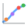

A visual, interactive catalog of the essential quantitative models powering fixed income markets. From bootstrapping zero curves to pricing mortgage-backed securities — explore, learn, and build intuition for each model through hands-on dashboards.